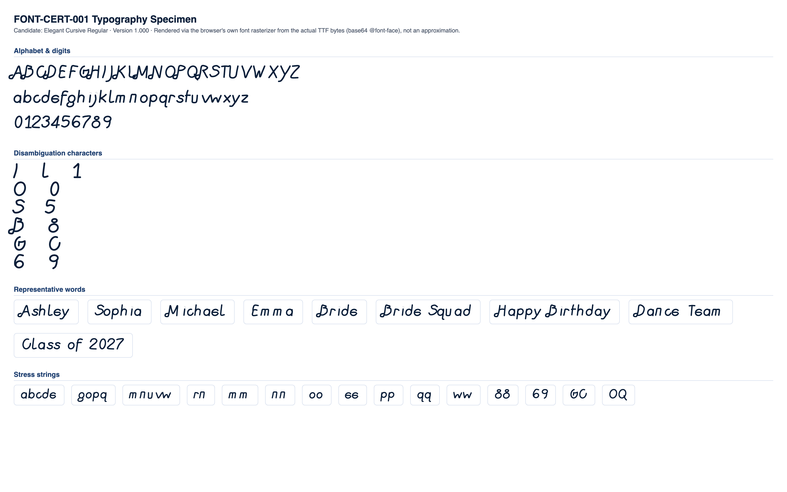

FAIL
| Status | Check | Category | Detail |
|---|---|---|---|
| PASS | Successful TTF parsing | parsing | opentype.js parsed the file without error. |
| PASS | Outline format | structure | TrueType (quadratic) outlines. sfnt signature "0x00010000", opentype.js outlinesFormat="truetype". |
| PASS | Quadratic TrueType outlines | structure | TrueType file with quadratic curves confirmed: 1102 curve commands found across 10 sampled glyphs. |
| PASS | unitsPerEm | structure | unitsPerEm = 1000 |
| PASS | Glyph count | structure | 71 glyphs (font.numGlyphs=71). |
| FAIL | .notdef at glyph index 0 | structure | Glyph index 0 is named "unknown", not ".notdef". |
| PASS | Unicode cmap coverage | coverage | cmap maps 70 Unicode code point(s) to glyphs. |
| PASS | Required character coverage (A-Z, a-z, 0-9, space, . , ' - ! ?) | coverage | All 69 required characters map to a real glyph (glyph index != 0). |
| PASS | Required sfnt tables | structure | All required tables present: cmap, glyf, head, hhea, hmtx, loca, maxp, name, post, OS/2. |
| PASS | Family / subfamily / version / PostScript naming | naming | family="Elegant Cursive", subfamily="Regular", version="Version 1.000", postScriptName="ElegantCursive-Regular". |
| PASS | Ascender, descender, line gap, horizontal metrics | metrics | ascender=700, descender=-230, hhea.lineGap=0, advanceWidthMax=950, numberOfHMetrics=71 (hmtx table present: true). |
| PASS | Invalid or empty glyphs | geometry | No mapped, non-whitespace character resolves to an empty outline. |
| PASS | Open contours | geometry | Every required-character contour closes explicitly (an explicit "Z"/closepath command) or implicitly (its final point returns to its starting point). |
| WARNING | Self-intersections | geometry | 27 of 69 character(s) show 57 total crossing(s) (small counts: 1-4 per affected character) -- "A" (self:1, cross-contour:3), "B" (self:3, cross-contour:0), "D" (self:2, cross-contour:0), "E" (self:0, cross-contour:1), "F" (self:0, cross-contour:1), "H" (self:1, cross-contour:2), "K" (self:2, cross-contour:4), "M" (self:4, cross-contour:0), "N" (self:3, cross-contour:0), "P" (self:2, cross-contour:0), "R" (self:1, cross-contour:0), "T" (self:0, cross-contour:1), "V" (self:1, cross-contour:0), "X" (self:0, cross-contour:4), "Y" (self:0, cross-contour:3), "g" (self:0, cross-contour:1), "h" (self:0, cross-contour:1), "i" (self:1, cross-contour:0), "j" (self:1, cross-contour:0), "q" (self:0, cross-contour:1), "t" (self:0, cross-contour:1), "x" (self:0, cross-contour:3), "z" (self:2, cross-contour:0), "1" (self:0, cross-contour:1), "3" (self:1, cross-contour:0), "4" (self:1, cross-contour:3), "." (self:1, cross-contour:0). Not production-blocking on its own (verify visually against rhinestone-specimen.png/typography-specimen.png -- a transversal crossing in the outline does not necessarily produce a visible defect once converted to stones). |
| WARNING | Zero-length or duplicate outline segments | geometry | 68 of 69 character(s) contain 6645 raw zero-length draw command(s) total (a command whose endpoint exactly duplicates the current pen position -- draws nothing, harmless no-op, but real source-file redundancy), 0 duplicate outline segments. Not production-blocking: these commands have no visual or geometric effect. Per-character counts: "A" (zero-length:114, duplicate:0), "B" (zero-length:157, duplicate:0), "C" (zero-length:147, duplicate:0), "D" (zero-length:117, duplicate:0), "E" (zero-length:94, duplicate:0), "F" (zero-length:74, duplicate:0), "G" (zero-length:184, duplicate:0), "H" (zero-length:121, duplicate:0), +60 more. |
| PASS | Coordinates outside valid TrueType ranges | geometry | All required-character outline coordinates fall within the signed 16-bit range (-32768 to 32767). |
| PASS | Inconsistent or suspicious advance widths / side bearings | metrics | Advance widths for required characters cluster reasonably around the median (583 units). |
Rendered from the actual candidate TTF via a base64-embedded @font-face rule (the browser's own font rasterizer), not an approximation.

Rendered through the real production pipeline: FontManager → OpenTypeProvider → GeometryEngine.generateTextLayout() → StoneLayout. Gap 0.3mm. Text height scales with stone size (height = 12.5× stone diameter) rather than a single fixed height, so every size keeps a comparable stone count per glyph -- see the per-size table below. Successful layout generation (a non-empty StoneLayout with no collisions) is not the same as visual readability; see section 5's readability metrics for objective, threshold-based findings.
| SS6 | text height: 25mm |
|---|---|
| SS10 | text height: 35mm |
| SS16 | text height: 50mm |
| SS20 | text height: 59mm |
| SS30 | text height: 80mm |
The specimen below is organized as one clearly labeled section per stone size (SS6, SS10, SS16, SS20, SS30), each with its own representative lowercase letters, all 12 confusable pairs, and representative words/phrases -- not one shared, densely-scaled composite image.

| Pair | Size | Stone counts | Chamfer distance | Result |
|---|---|---|---|---|
| "I" vs "l" | SS16 | 11 / 13 | 0.0839 | WARNING |
| "l" vs "1" | SS16 | 13 / 24 | 0.0702 | WARNING |
| "I" vs "1" | SS16 | 11 / 24 | 0.0822 | WARNING |
| "O" vs "0" | SS16 | 33 / 30 | 0.0697 | WARNING |
| "S" vs "5" | SS16 | 34 / 29 | 0.0567 | WARNING |
| "B" vs "8" | SS16 | 43 / 32 | 0.0790 | WARNING |
| "G" vs "C" | SS16 | 34 / 30 | 0.0638 | WARNING |
| "Q" vs "O" | SS16 | 39 / 33 | 0.0654 | WARNING |
| "e" vs "c" | SS16 | 29 / 19 | 0.0801 | WARNING |
| "e" vs "o" | SS16 | 29 / 20 | 0.0844 | WARNING |
| "c" vs "o" | SS16 | 19 / 20 | 0.0935 | PASS |
| "6" vs "9" | SS16 | 35 / 27 | 0.0712 | WARNING |
Threshold: 0.09 (normalized, unit-height point clouds). Below threshold = flagged as visually similar.
| Char | SS6 | SS10 | SS16 | SS20 | SS30 |
|---|---|---|---|---|---|
| "A" | 37 | 37 | 37 | 34 | 43 |
| "B" | 38 | 41 | 43 | 42 | 43 |
| "C" | 28 | 30 | 30 | 29 | 31 |
| "D" | 39 | 37 | 47 | 48 | 41 |
| "E" | 25 | 27 | 26 | 30 | 29 |
| "F" | 25 | 25 | 21 | 26 | 25 |
| "G" | 31 | 35 | 34 | 38 | 35 |
| "H" | 45 | 37 | 43 | 38 | 35 |
| "I" | 13 | 17 | 11 | 14 | 17 |
| "J" | 21 | 21 | 18 | 25 | 23 |
| "K" | 42 | 42 | 39 | 43 | 35 |
| "L" | 20 | 20 | 17 | 21 | 21 |
| "M" | 49 | 51 | 46 | 51 | 46 |
| "N" | 42 | 44 | 43 | 45 | 40 |
| "O" | 33 | 33 | 33 | 36 | 33 |
| "P" | 33 | 36 | 33 | 38 | 35 |
| "Q" | 37 | 36 | 39 | 41 | 38 |
| "R" | 44 | 43 | 45 | 47 | 43 |
| "S" | 30 | 29 | 34 | 30 | 32 |
| "T" | 14 | 21 | 17 | 23 | 22 |
| "U" | 31 | 31 | 34 | 32 | 39 |
| "V" | 26 | 27 | 25 | 26 | 25 |
| "W" | 39 | 41 | 28 | 32 | 41 |
| "X" | 32 | 19 | 31 | 19 | 35 |
| "Y" | 35 | 22 | 37 | 34 | 27 |
| "Z" | 26 | 35 | 36 | 27 | 37 |
| "a" | 23 | 23 | 23 | 26 | 26 |
| "b" | 29 | 25 | 28 | 23 | 24 |
| "c" | 18 | 18 | 19 | 19 | 17 |
| "d" | 28 | 29 | 24 | 28 | 31 |
| "e" | 24 | 23 | 29 | 26 | 27 |
| "f" | 20 | 24 | 27 | 21 | 27 |
| "g" | 32 | 34 | 34 | 37 | 37 |
| "h" | 26 | 26 | 20 | 24 | 26 |
| "i" | 12 | 8 | 13 | 13 | 13 |
| "j" | 18 | 20 | 20 | 18 | 19 |
| "k" | 23 | 26 | 23 | 23 | 26 |
| "l" | 18 | 19 | 13 | 22 | 21 |
| "m" | 27 | 26 | 29 | 27 | 28 |
| "n" | 21 | 25 | 25 | 21 | 19 |
| "o" | 21 | 22 | 20 | 24 | 23 |
| "p" | 28 | 25 | 30 | 31 | 25 |
| "q" | 28 | 31 | 26 | 29 | 29 |
| "r" | 15 | 12 | 16 | 12 | 12 |
| "s" | 20 | 18 | 21 | 21 | 22 |
| "t" | 17 | 11 | 18 | 18 | 13 |
| "u" | 18 | 19 | 23 | 19 | 16 |
| "v" | 16 | 16 | 17 | 16 | 20 |
| "w" | 27 | 21 | 21 | 27 | 23 |
| "x" | 16 | 16 | 17 | 18 | 19 |
| "y" | 23 | 23 | 21 | 21 | 28 |
| "z" | 20 | 19 | 17 | 23 | 19 |
| "0" | 29 | 30 | 30 | 29 | 29 |
| "1" | 21 | 24 | 24 | 20 | 23 |
| "2" | 26 | 33 | 27 | 38 | 29 |
| "3" | 26 | 27 | 26 | 30 | 24 |
| "4" | 25 | 26 | 28 | 23 | 27 |
| "5" | 33 | 27 | 29 | 32 | 30 |
| "6" | 34 | 31 | 35 | 35 | 34 |
| "7" | 21 | 22 | 20 | 27 | 20 |
| "8" | 34 | 34 | 32 | 33 | 36 |
| "9" | 28 | 26 | 27 | 27 | 27 |
Cell values are stone count per glyph at that stone size ("coll." = colliding stone pairs found).
Successful layout generation (a non-empty StoneLayout with no collisions) is not the same as visual readability. The checks below are separate, threshold-based readability findings computed from the same production data.
No glyph/size combination falls below the minimum meaningful stone count.
No counter-bearing glyph/size combination falls below the counter-bearing stone-count floor.
| Pair | Size | Chamfer distance | Stone counts |
|---|---|---|---|
| "I" vs "l" | SS6 | 0.0834 | 13 / 18 |
| "l" vs "1" | SS6 | 0.0739 | 18 / 21 |
| "O" vs "0" | SS6 | 0.0604 | 33 / 29 |
| "S" vs "5" | SS6 | 0.0586 | 30 / 33 |
| "B" vs "8" | SS6 | 0.0788 | 38 / 34 |
| "G" vs "C" | SS6 | 0.0584 | 31 / 28 |
| "Q" vs "O" | SS6 | 0.0628 | 37 / 33 |
| "e" vs "o" | SS6 | 0.0777 | 24 / 21 |
| "c" vs "o" | SS6 | 0.0895 | 18 / 21 |
| "6" vs "9" | SS6 | 0.0827 | 34 / 28 |
| "l" vs "1" | SS10 | 0.0855 | 19 / 24 |
| "I" vs "1" | SS10 | 0.0591 | 17 / 24 |
| "O" vs "0" | SS10 | 0.0589 | 33 / 30 |
| "S" vs "5" | SS10 | 0.0521 | 29 / 27 |
| "B" vs "8" | SS10 | 0.0676 | 41 / 34 |
| "G" vs "C" | SS10 | 0.0643 | 35 / 30 |
| "Q" vs "O" | SS10 | 0.0510 | 36 / 33 |
| "e" vs "c" | SS10 | 0.0825 | 23 / 18 |
| "e" vs "o" | SS10 | 0.0704 | 23 / 22 |
| "c" vs "o" | SS10 | 0.0889 | 18 / 22 |
| "6" vs "9" | SS10 | 0.0781 | 31 / 26 |
| "I" vs "l" | SS16 | 0.0839 | 11 / 13 |
| "l" vs "1" | SS16 | 0.0702 | 13 / 24 |
| "I" vs "1" | SS16 | 0.0822 | 11 / 24 |
| "O" vs "0" | SS16 | 0.0697 | 33 / 30 |
| "S" vs "5" | SS16 | 0.0567 | 34 / 29 |
| "B" vs "8" | SS16 | 0.0790 | 43 / 32 |
| "G" vs "C" | SS16 | 0.0638 | 34 / 30 |
| "Q" vs "O" | SS16 | 0.0654 | 39 / 33 |
| "e" vs "c" | SS16 | 0.0801 | 29 / 19 |
| "e" vs "o" | SS16 | 0.0844 | 29 / 20 |
| "6" vs "9" | SS16 | 0.0712 | 35 / 27 |
| "I" vs "1" | SS20 | 0.0825 | 14 / 20 |
| "O" vs "0" | SS20 | 0.0681 | 36 / 29 |
| "S" vs "5" | SS20 | 0.0498 | 30 / 32 |
| "B" vs "8" | SS20 | 0.0722 | 42 / 33 |
| "G" vs "C" | SS20 | 0.0793 | 38 / 29 |
| "Q" vs "O" | SS20 | 0.0632 | 41 / 36 |
| "e" vs "c" | SS20 | 0.0796 | 26 / 19 |
| "e" vs "o" | SS20 | 0.0845 | 26 / 24 |
| "6" vs "9" | SS20 | 0.0725 | 35 / 27 |
| "I" vs "l" | SS30 | 0.0845 | 17 / 21 |
| "l" vs "1" | SS30 | 0.0840 | 21 / 23 |
| "I" vs "1" | SS30 | 0.0608 | 17 / 23 |
| "O" vs "0" | SS30 | 0.0684 | 33 / 29 |
| "S" vs "5" | SS30 | 0.0554 | 32 / 30 |
| "B" vs "8" | SS30 | 0.0727 | 43 / 36 |
| "G" vs "C" | SS30 | 0.0675 | 35 / 31 |
| "Q" vs "O" | SS30 | 0.0677 | 38 / 33 |
| "e" vs "c" | SS30 | 0.0795 | 27 / 17 |
| "e" vs "o" | SS30 | 0.0766 | 27 / 23 |
| "c" vs "o" | SS30 | 0.0895 | 17 / 23 |
| "6" vs "9" | SS30 | 0.0827 | 34 / 27 |
| Size | Diameter | Scale | Rendered stone size | Result |
|---|---|---|---|---|
| SS6 | 2mm | 5px/mm | 10px | PASS |
| SS10 | 2.8mm | 4px/mm | 11.2px | PASS |
| SS16 | 4mm | 3.5px/mm | 14px | PASS |
| SS20 | 4.7mm | 3px/mm | 14.1px | PASS |
| SS30 | 6.4mm | 2.5px/mm | 16px | PASS |
x-height measured spread: 67.4 font units across 13 letters (declared OS/2 sxHeight: 420). Cap-height measured spread: 44.5 font units across 26 letters (declared OS/2 sCapHeight: 660).
Visual-weight outliers (fill-ratio vs a-z median 0.409): "a" (1.250), "b" (0.808), "g" (0.776), "o" (1.125), "p" (0.780), "q" (0.854).
Baseline anomalies: "f".
Median intra-word (letter-to-letter) ink gap: 89 font units. A word-space is flagged if its own ink-to-ink gap is not at least 1.3× that median (i.e. it reads no wider than an ordinary letter gap).
| Word | Boundary | Gap (units) | vs. median | Result |
|---|---|---|---|---|
| Bride Squad | "e" | "S" | 501 | 5.63× | PASS |
| Happy Birthday | "y" | "B" | 271.8359375 | 3.05× | PASS |
| Dance Team | "e" | "T" | 665 | 7.47× | PASS |
| Class of 2027 | "s" | "o" | 499.3359375 | 5.61× | PASS |
| Class of 2027 | "f" | "2" | 445.83984375 | 5.01× | PASS |
All 5 tested word-space boundaries measure at least 1.3× the median intra-word letter gap (tightest: "Happy Birthday" between "y" and "B" at 3.05×) -- no word-space is flagged as reading like an ordinary letter gap.
| Word | SS6 | SS10 | SS16 | SS20 | SS30 |
|---|---|---|---|---|---|
| Ashley | 147 stones, min spacing 2.00mm, 4 cluster(s) | 145 stones, min spacing 2.81mm, 4 cluster(s) | 141 stones, min spacing 4.00mm, 4 cluster(s) | 147 stones, min spacing 4.71mm, 5 cluster(s) | 167 stones, min spacing 6.40mm, 5 cluster(s) |
| Sophia | 138 stones, min spacing 2.00mm, 3 cluster(s) | 131 stones, min spacing 2.80mm, 4 cluster(s) | 138 stones, min spacing 4.03mm, 6 cluster(s) | 145 stones, min spacing 4.70mm, 5 cluster(s) | 143 stones, min spacing 6.40mm, 6 cluster(s) |
| Michael | 170 stones, min spacing 2.00mm, 4 cluster(s) | 168 stones, min spacing 2.80mm, 4 cluster(s) | 163 stones, min spacing 4.03mm, 8 cluster(s) | 181 stones, min spacing 4.70mm, 5 cluster(s) | 176 stones, min spacing 6.40mm, 5 cluster(s) |
| Emma | 102 stones, min spacing 2.00mm, 4 cluster(s) | 102 stones, min spacing 2.80mm, 4 cluster(s) | 107 stones, min spacing 4.06mm, 4 cluster(s) | 110 stones, min spacing 4.70mm, 4 cluster(s) | 111 stones, min spacing 6.40mm, 6 cluster(s) |
| Bride | 117 stones, min spacing 2.01mm, 3 cluster(s) | 113 stones, min spacing 2.82mm, 5 cluster(s) | 125 stones, min spacing 4.01mm, 5 cluster(s) | 121 stones, min spacing 4.71mm, 5 cluster(s) | 126 stones, min spacing 6.40mm, 5 cluster(s) |
| Bride Squad | 243 stones, min spacing 2.00mm, 5 cluster(s) | 242 stones, min spacing 2.80mm, 7 cluster(s) | 253 stones, min spacing 4.01mm, 8 cluster(s) | 251 stones, min spacing 4.70mm, 8 cluster(s) | 258 stones, min spacing 6.40mm, 8 cluster(s) |
| Happy Birthday | 329 stones, min spacing 2.00mm, 11 cluster(s) | 306 stones, min spacing 2.80mm, 13 cluster(s) | 325 stones, min spacing 4.01mm, 14 cluster(s) | 331 stones, min spacing 4.70mm, 13 cluster(s) | 331 stones, min spacing 6.40mm, 13 cluster(s) |
| Dance Team | 212 stones, min spacing 2.00mm, 5 cluster(s) | 219 stones, min spacing 2.80mm, 5 cluster(s) | 240 stones, min spacing 4.01mm, 5 cluster(s) | 241 stones, min spacing 4.70mm, 5 cluster(s) | 233 stones, min spacing 6.40mm, 6 cluster(s) |
| Class of 2027 | 251 stones, min spacing 2.00mm, 7 cluster(s) | 272 stones, min spacing 2.80mm, 8 cluster(s) | 259 stones, min spacing 4.00mm, 10 cluster(s) | 296 stones, min spacing 4.70mm, 9 cluster(s) | 279 stones, min spacing 6.40mm, 8 cluster(s) |
| File size | 69.8 KB |
|---|---|
| sfnt signature | 0x00010000 |
| Outline format | truetype |
| unitsPerEm | 1000 |
| Glyph count | 71 |
| cmap entries | 70 |
| Tables present | OS/2, cmap, glyf, head, hhea, hmtx, loca, maxp, name, post |
| Family / Subfamily | Elegant Cursive / Regular |
| Version | Version 1.000 |
| PostScript name | ElegantCursive-Regular |
| Ascender / Descender | 700 / -230 |
| Line gap | 0 |
| sxHeight / sCapHeight | 420 / 660 |
| Italic angle | 0 |
| Fixed pitch | no |
| Curve vs line commands (sample) | 1102 curve / 1134 line (10 glyphs) |